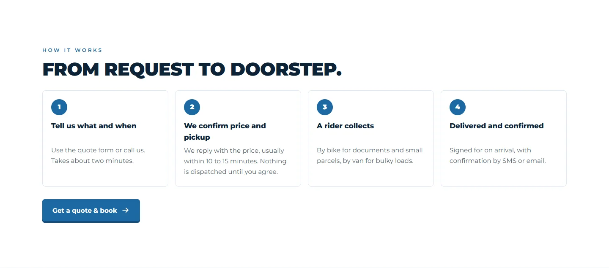

Problem
The requirements for this site came out of client meetings, not a written spec. An AI coding agent will build whatever it is told, including features nobody has decided on yet. I needed a way to turn each meeting into a small, checked piece of work.
My role
I designed and built the full site solo, using Claude Code as my coding agent. I wrote every prompt, reviewed every build, and decided what was ready to go in.
How it works
Every change to the site went through the same five steps.
- Client meetingThe client says what they want and reacts to the current version.
- TranscriptThe meeting transcript is the source for the next piece of work.
- Scoped Claude Code promptOne prompt per piece of work, with checkpoints written into it.
- BuildClaude Code builds up to the next checkpoint, then stops.
- ReviewI check the result before the next step starts.
Two files carried the project between sessions. A CLAUDE.md file held the build rules, and a decision log kept the history.
This is what that process has produced so far, on staging.


Key decisions
- Scope from the meeting. Each prompt was written from a meeting transcript, so the work matched what the client actually asked for.
- Hold back what isn't ready. Features still in development stay listed as in development. They are not presented as finished.
- Checkpoints in every prompt. The agent stops at set points so I can review before it continues.
- Rules and history live in files. CLAUDE.md holds the build rules. The decision log records what was decided and keeps the history.
What's done vs in progress
Built so far
- Home, quote & booking, corporate accounts, 5 service pages, contact, privacy/terms/cookies.
- Service-picker table matching needs to services.
- Client logo wall.
- Real Google reviews.
- 4-step "how it works".
- Story timeline.
- FAQ.
- WhatsApp chat link.
- Sticky mobile Call / Schedule a Pickup bar.
- Skippable intro.
In development
- Booking calendar with a server-enforced weekly cap (Monday–Sunday, Singapore time).
- Tracking link in order emails.
- Reminder email.
- "Track a delivery" link.
Limitations
- The site is on staging. It is not live yet.
- The booking calendar, tracking link, reminder email and "Track a delivery" link are still in development.
- There are no results to report yet, because the site has not launched.
- The client is not named here, so the screenshots leave out the site's header, logo and client logo wall.
Links
- Also built for this client: BUILD 01, the live AI email triage workflow
- Back to web and product builds
- Case study: my AI workspace system
- Contact me